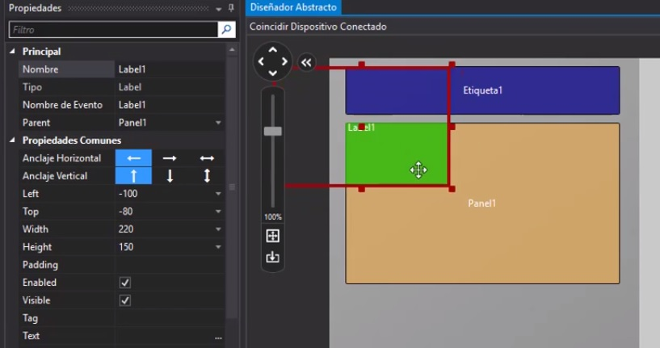
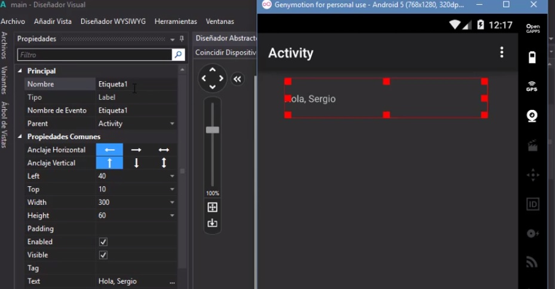
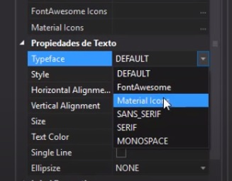
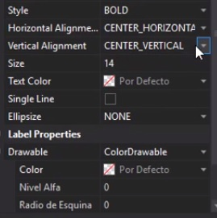
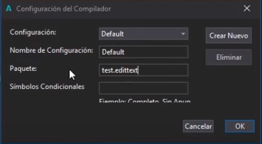
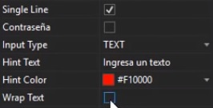
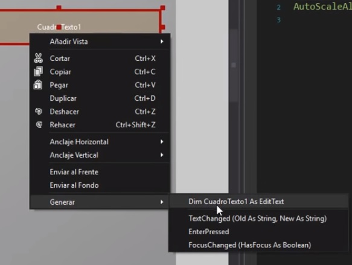
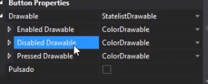

Un Label o etiqueta, es una vista que nos permite mostrar un contenido de tipo texto.
En la siguiente imagen veremos que los labeles no son usados solo como los hemos usado para las anteriores lecciónes, tambien funciona para usar paneles, veras podemos seleccionar el panel y podemos usar media, un cuarto o completa la etiqueta, solo con darle la propiedad en "parent" que es un apartado de las propiedades, podemos decidir si queremos que sea de propiedad unica o de propiedad con un panel:

anclaje horizontal: es para señalar donde queremos nuestro label, es decir si le damos a la flecha que esta a la iquierda significa que a la izquierda estara el label, la de la derecha a la derecha y la que esta en ambas direcciónes significa que estara centrado. (esto funciona igual que en el anclaje vertical)
Left: esto es para señalar que tanto quieres tener la etiqueta despegado de la parte izquierda de la pantalla.
Top: lo mismo que left pero de la parte de arriba
Width: esto significa que tan ancho queremos la etiqueta
Heigth: esto es lo alto que queramos la etiqueta.
Padding: esto es que tan resaltado queremos ver un texto.
Enabled: significa que si es accesible o no
Visible: es por si queremos o no que sea visible nuestra label
Tag: esto es mas que un sobre nombre para poder invocar nuestro label de manera mas facil
Text: aqui es donde escribimos lo que queremos que salga en la etiqueta, como un texto.

este apartado solo es para poner iconos en lugar de texto, estas dos opciones no son desbloqueadas hasta que actives las opciones, si quieres poner iconos tipo "FontAwesome Icons" deberas ir a "Typeface" y pner la opcion que se llama igual e igual con lo de "material icon"
Las otras opciones son fuentes, cambia un poco el como son las letras.

Style: aqui son para mas fuentes.
Horizontal alignment:es para centrar los textos del label de manera horizontal
vertical alignment: igual que arriba pero en vertical
Size es el tamaño del texto
text color: color del texto
single line: es si queremos o no todo el texto en una sola linea
Ellipsize: esto significa si queremos 3 puntos suspensivos al inicio, medio o final de modo que se vea menos texto para esta funcion deberemos activar la "single line"
drawable, esto nos indica si queremos o no un color de fondo en el label
color: donde selecciónaremos el color
nivel alfa: donde le diremos que tan opaco queremos el color
radio de equina: si queremos que las esquinas sean redondas o cuadradas

El EditText es el view de entrada de texto estándar en aplicaciones de Android. Si el usuario necesita ingresar texto en una aplicación, esta es la forma principal de hacerlo.
Configuracion de compilado es la siguiente:

notaras mucha similitud con lo que aprendimos en label, lo unico que se ve diferente es este apartado:
single line: es para definir si solo va en una linea o que si se pasa del tamaño del cuadro de texto creara una nueva linea.
Contraseña: Es para darle al texto el efecto que si escribimos en ligar de mostrar el texto nos mostrara las letras en incognito.
imput text: es el tipo de texto que ingresaremos, puede ser numero, letra etc.
hint text: es la palabra que se mostrara al estar vacio el cuadro de texto.
hide color: el color del texto
wrap text: es para evitar renglones en los textos ingresados.

como ya sabemos crear eventos y vincular los objetos, les dejare los tipos de eventos del cuadro de texto:

TextChanged: Este evento se activara cuando nostros cambiemos el texto preterminado, es decir: si hay una "hola mundo" y nosotros cambiamos el texto a "Hola sheol" este automaticamente activara el evento.
Enter pressed: Este evento se activara una vez precionemos Enter en el dispositivo.
FocusChanged: Este activara el evento una vez dejemos del cuadro, es decir que cambiara el texto cuando nostros dejemos de escribir y pasemos a otro cuadro de texto.
Un botón consta de texto o un icono (o tanto texto como un icono) que comunica qué acción ocurre cuando el usuario lo toca.
Enabled drawable: esto sirve para saber si funciona el boton, aqui podremos cambiar el color a gusto propio, un ejemplo, si elegimos el color azul para decir que funciona entonces este boton sera azul.
Disabled drawable: esto es lo contrario de lo de arriba, es decir, pongamos que el color aqui es rojo, suponiendo que tenemos varios botones pero hay varios rojos esto quiere decir que esos botones rojos no funcionaran ya que esta funcion permite identificar cuales botones sirven y cuales no.
Pressed drawable: Cuando nosotros mantengamos presionado un boton este nos sirve para marcar como presionado, es decir, si nosotros pusimos este colo en negro, cuando nosotros presionemos un boton nostros tendremos que el boton que presionamos sera de ese color hasta que lo dejemos de presionar.
Pulsado: este si lo activamos daremos a entender que solo funcionara el boton si lo mantenemos presionado de lo contrario no hara nada.

El como puedas utilizar los botones dependera de lo que quieras hacer, ya que el boton lo usamos durante todo el manual, date una vuelta por el manual para que veas los ejemplos que puedes hacer.